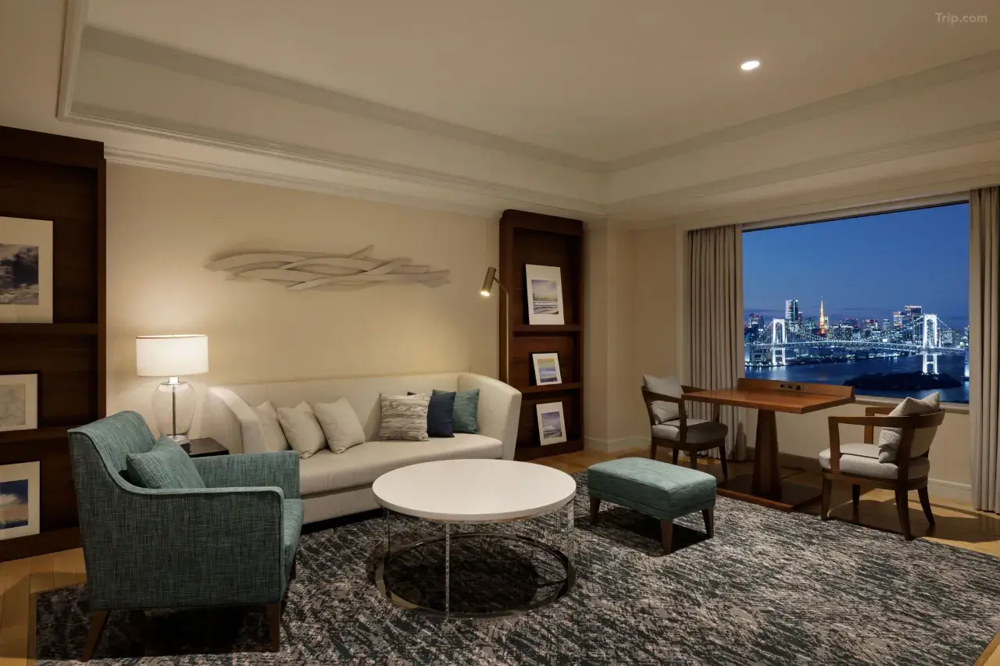
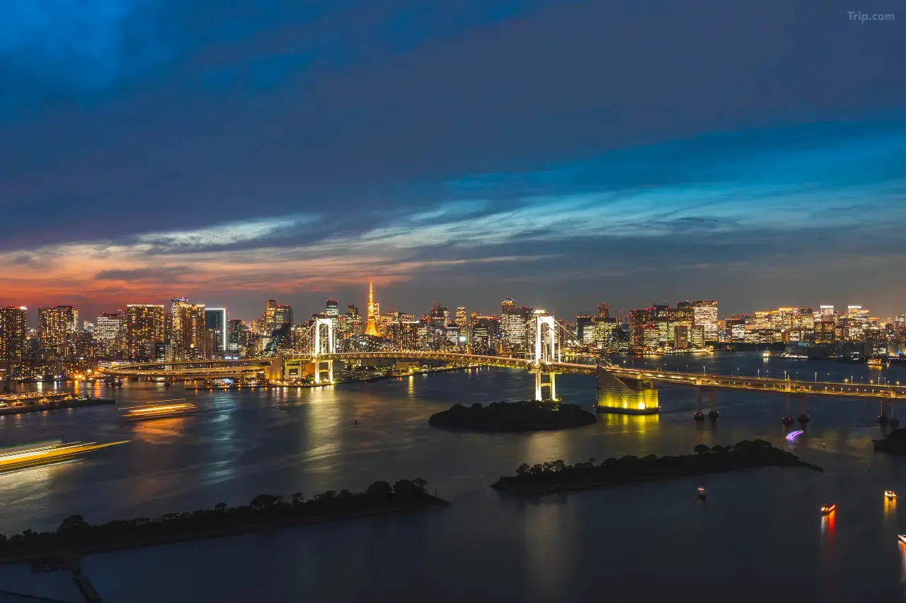
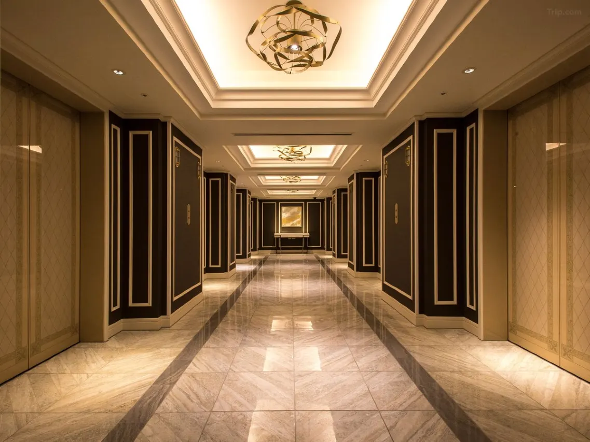
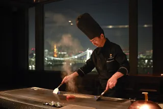
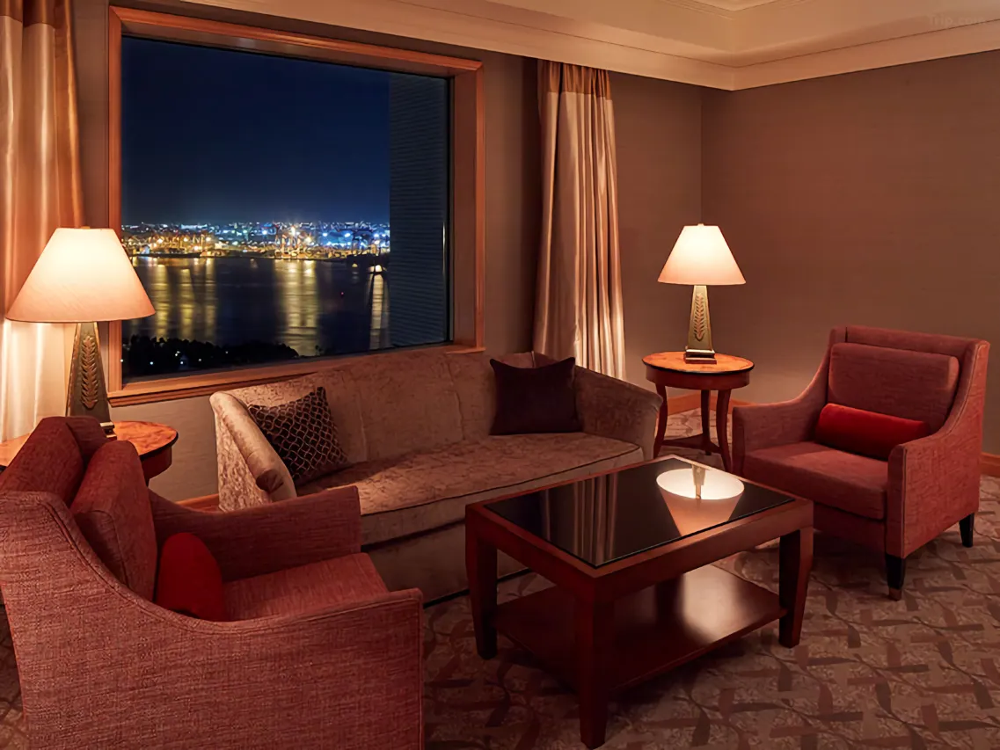
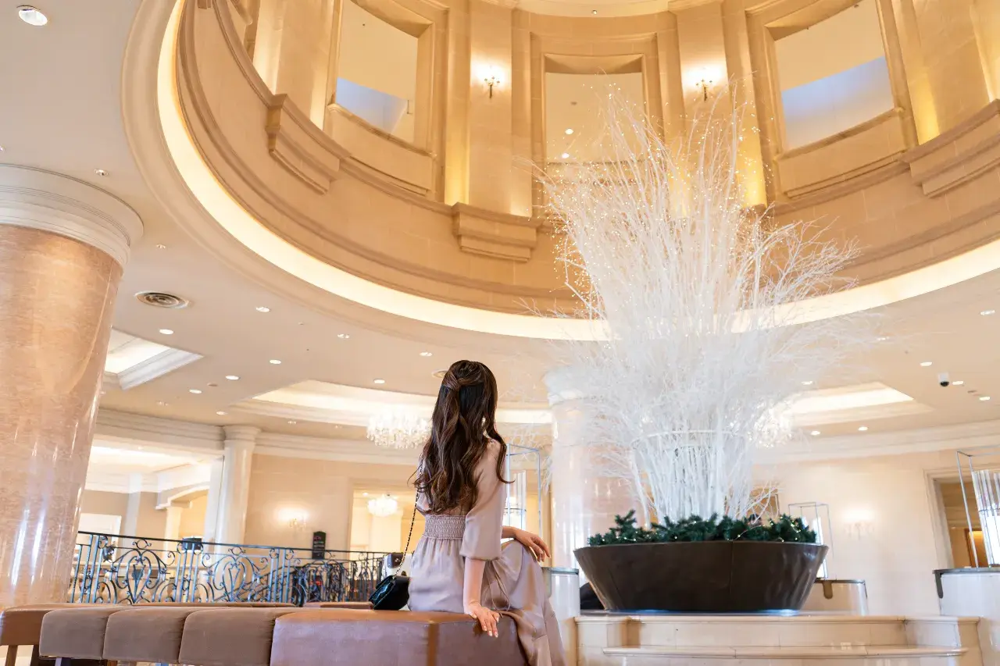
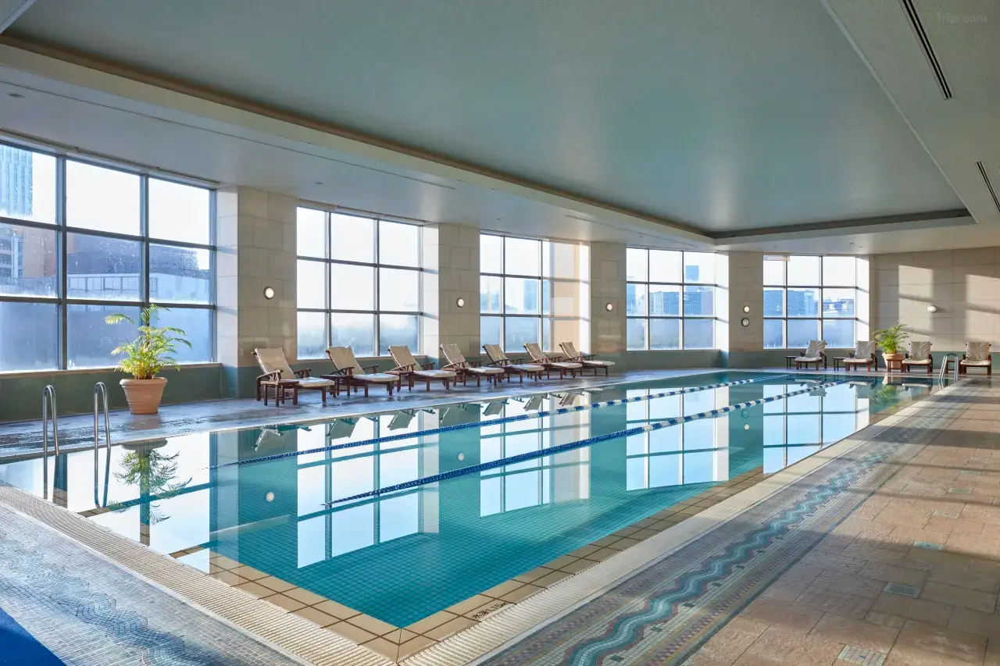

The Fuji TV building on Odaiba — that unmistakable structure with its suspended titanium sphere hovering between two rectangular towers above Tokyo Bay — is 900 feet from the front entrance of the Grand Nikko Tokyo Daiba. In Death Note, that building becomes Sakura TV: the broadcast station where Kira's television messages are transmitted to a watching nation, and the site of one of the series' most dramatic public confrontations. When you stand on the waterfront promenade at the end of the hotel's access road at night, with the sphere illuminated and the Rainbow Bridge's lights reflected in the bay, you are standing in the establishing shot that Death Note's background artists drew from this exact angle, from this exact island.
That proximity — 900 feet, a three-minute walk — makes the Grand Nikko the natural accommodation choice for the Odaiba chapter of the Death Note pilgrimage. But Odaiba is also the address of DiverCity Tokyo Plaza, where Gundam merchandise stores, pop-up anime shops, and the new Godzilla Store Daiba cluster around what was once the site of the legendary life-size RX-78-2 Gundam statue. And the Grand Nikko has its own documented history of anime collaboration, including the Gundam-themed suite that, at its peak, was the most sought-after single otaku hotel room in Japan. This is not a hotel that happens to be near anime culture. It is a hotel that has, for decades, been part of it.
Death Note, Location 07: The Sakura TV Visual Match
The Fuji TV building at Odaiba is one of the most architecturally specific structures in Japan — a media headquarters designed by Kenzo Tange, completed in 1997, consisting of two rectangular towers connected by a suspended walkway with a giant titanium sphere hanging from the bridge structure. From the Rainbow Bridge approach or the ferry from Hinode Pier, it reads as unmistakably itself. No other building in Japan has that sphere, and Death Note's background art team used it with documentary precision.

The fictional Sakura TV in Death Note is drawn directly from the Fuji TV building — the silver sphere intact, the twin-tower structure reproduced, the waterfront position on Tokyo Bay maintained. The building serves the same narrative function in fiction that it serves in reality: the physical embodiment of television as an institution with its own architecture, its own site in the city, its own relationship to the water and the bridge and the artificial island it stands on. Death Note's Sakura TV is powerful because Fuji TV is powerful, and the visual translation between the two is exact enough to be used as a shot-by-shot overlay.
The waterfront promenade directly in front of the Fuji TV building — the same promenade that begins 900 feet from the Grand Nikko's entrance — provides the precise angle that appears in the anime's establishing shots and is always freely accessible. The sphere observation deck, open Thursday through Sunday, puts you inside the building that Kira commandeered. Staying at the Grand Nikko means you can walk this route at any hour, including late at night when the sphere's illumination and the Rainbow Bridge's reflection in the water create the specific visual register of the anime's most cinematically composed scenes.
For the full nine-location Death Note pilgrimage documented in our complete Death Note real locations guide, the Odaiba stop — Location 07 — is the only one that requires leaving central Tokyo. The Grand Nikko handles that logistics problem completely: stay here on the Odaiba night, walk to the Fuji TV building, then use the Yurikamome Line from Daiba Station to reach Shimbashi in two stops, and from there the entire JR and subway network.
The Gundam Collaboration: A Hotel That Has Lived the Anime
Before it became the Grand Nikko Tokyo Daiba, this building operated as the Grand Pacific Le Daiba — and during that era, it ran what was almost certainly the most elaborate anime hotel collaboration in Japan's history. The Gundam-themed rooms, developed in partnership with Gundam Front Tokyo at the adjacent DiverCity complex, divided their most celebrated suite — the Room-G Special Type — between two competing factions of the Mobile Suit Gundam universe: the lounge area was designed as the bridge of an EFSF Earth Federation spacecraft, while the bedroom and its ensuite carried full Zeon faction aesthetic. Two doors, two room keys, two sides of the war's most famous conflict, all contained within a single hotel suite on the sixth floor of a five-star hotel on a man-made island in Tokyo Bay.

That specific Gundam suite closed in 2017 when Gundam Front Tokyo relocated. But the hotel's identity as Odaiba's primary anime collaboration destination did not close with it. DiverCity Tokyo Plaza — the shopping complex two minutes from the hotel's main entrance — today houses official merchandise stores for Gundam, One Piece, Doraemon, and Godzilla, with rotating pop-up stores ensuring that the anime offering changes season by season. The hotel's official website covers DiverCity as part of its sightseeing guide, and the relationship between the building and Odaiba's anime ecosystem has remained structurally intact even as the specific collaborations have evolved. Before booking, it is always worth checking the hotel's current events page and social media for any active themed room partnerships — the Grand Nikko has demonstrated, repeatedly, that it takes these collaborations seriously when it runs them.
The Rooms: 882 Rooms, Tokyo Bay in the Window
The Grand Nikko Tokyo Daiba offers 882 guest rooms organized across three floor categories — Regular, Premier, and Executive — each with its own design language and privilege structure. The hotel describes its concept as "Another Dimension, Another Tokyo," a phrase that lands differently when you understand that the island of Odaiba is itself a different dimension of the city: artificial land, built on reclaimed bay, with no direct visual connection to the urban density of central Tokyo. From the hotel's upper floors, the skyline across the water — Rainbow Bridge in the foreground, Tokyo Tower and the city's glass towers behind it — is one of the most composed night views in Japan.
Standard rooms are equipped with free Wi-Fi at 50+ Mbps, LCD televisions, refrigerators, pillow menus, laptop-friendly workspaces, and the kind of full-service bathroom appointment — toiletries, bidet, bathrobes — that a five-star property is expected to provide. Executive Floor rooms unlock access to a dedicated check-in lounge and complimentary use of the fitness club, indoor pool, and sauna. Premier Floor rooms on the bayview side offer the most direct and unobstructed views of the Rainbow Bridge approach — the precise visual that appears in the anime's establishing shots from the water. The Royal Suite and Governor Suite categories sit at the property's peak, at a scale and specification appropriate to those names.
Nine Restaurants, One Island
The hotel operates nine restaurants and bars, a range that makes the Grand Nikko effectively self-sufficient as a dining destination for the length of a stay. The Grill on 30th and Teppanyaki Icho, both on the 30th floor, pair their menus with the panoramic Rainbow Bridge view that the elevation makes possible — grilled wagyu and teppanyaki precision against a backdrop that most Tokyo restaurants could not purchase at any price. Sushi Tamakagari and Tempura Tamagoromo, also on the 30th floor, bring the Japanese omakase tradition to the same elevation and the same view.
On the lower floors, Chinese Restaurant Toh-Lee serves Cantonese cuisine in private rooms suited to group dining; the Italian restaurant Incontro provides a lighter European alternative; Garden Dining handles the Western buffet category. The Lobby Cafe and the Bakery & Pastry Shop serve the ground-floor traffic. The Bar & Lounge, which the hotel refers to as Star Road, transitions to a cocktail bar after dinner. Breakfast — available across multiple venues — receives consistent praise in guest reviews for its variety and quality, which, for a hotel of this scale operating nine separate kitchens, represents a meaningful operational achievement.
Odaiba: The Island That Anime Built
Odaiba is not a neighborhood in the conventional Tokyo sense. It is a man-made island in Tokyo Bay, developed through the 1990s as an entertainment and commercial district, and it has a relationship with popular culture — anime, gaming, science fiction architecture, interactive media — that no naturally occurring Tokyo district could have planned. The Mori Building Digital Art Museum (teamLab Borderless) relocated to Azabudai Hills in 2024, but the Museum of Emerging Science and Innovation (Miraikan), the Fuji TV building, DiverCity Tokyo Plaza, Aqua City Odaiba, and the Decks Tokyo shopping complex all remain within walking distance of the hotel.
The Yurikamome monorail — the elevated driverless line that arcs over the bay — connects Daiba Station, 300 meters from the hotel, to Shimbashi in central Tokyo in approximately 25 minutes, with Rainbow Bridge visible through the windows for the entire crossing. The Tokyo Water Bus also operates from the Odaiba Marine Park pier, a five-minute walk from the hotel, providing ferry service to Hinode Pier in central Tokyo — the most cinematically appropriate arrival route for a pilgrimage that includes the Fuji TV building as a destination.
Practical Information
- Check-in: 3:00 PM Check-out: 11:00 AM
- Death Note connection: 900 ft from Fuji TV building — the direct visual model for Sakura TV across multiple episodes · Location 07 in the full Death Note pilgrimage
- Anime collaboration history: Gundam-themed suite (EFSF/Zeon) and rooms — historical; check hotel website and social media for current active collaborations before booking
- Rooms: 882 rooms across Regular, Premier, and Executive floors
- Dining: 9 restaurants and bars · The Grill on 30th and Teppanyaki Icho with Rainbow Bridge views · Sushi and Teppanyaki on 30F · Cantonese · Italian · Buffet · Café · Bar
- Facilities: Indoor pool · Sauna · Fitness club Le Club (fee applies; free for Executive Floor guests) · Outdoor terrace pool (summer only) · Art gallery · Spa · Hair salon · Conference and banquet space
- Nearest station: Daiba Station (Yurikamome monorail) — 3 min walk · To Shimbashi ~25 min
- To Fuji TV building: 3 min walk (900 ft)
- To DiverCity Tokyo Plaza (Gundam, One Piece, Godzilla stores): 2 min walk
- Airport access: ~20 min from Haneda via direct bus · Shuttle bus service available
- Address: 2-6-1 Daiba, Minato-ku, Tokyo 135-8701
Getting There: By Monorail, By Ferry, or By Bridge
Three routes connect the Grand Nikko to the rest of Tokyo, and each one is worth considering on its own terms. The Yurikamome monorail from Shimbashi Station — reachable from virtually anywhere in central Tokyo via JR or subway — crosses Rainbow Bridge and arrives at Daiba Station in about 25 minutes; the crossing itself is one of the more visually extraordinary commutes in the city, particularly at night. The Tokyo Water Bus from Hinode Pier takes approximately 20 minutes and arrives directly at the Odaiba waterfront, within view of the Fuji TV sphere — this is the approach that the Death Note pilgrimage guide recommends for Odaiba, and it is easy to understand why. From Haneda Airport, a direct bus connection takes approximately 20 minutes, making this one of the more airport-convenient luxury hotels in Tokyo.
For pilgrims working the full nine-location Death Note itinerary, the most efficient sequence places Odaiba as a dedicated evening — arriving at the Grand Nikko after covering the government-district cluster in Kasumigaseki and Hibiya, spending the night on the island, visiting the Fuji TV building in the morning, and then returning to central Tokyo via the Yurikamome to continue toward Shinjuku, Bunkyo, and ultimately Yokohama for the finale. The Grand Nikko's check-out at 11 AM supports this sequence comfortably.
Beyond the Pilgrimage: Grand Nikko as a Tokyo Base
The Death Note connection and the Gundam history are the anime credentials, but the Grand Nikko Tokyo Daiba operates as a full five-star resort-hotel regardless of which pilgrimage is currently active. Its 882 rooms, nine dining venues, fitness club, indoor and outdoor pools, spa services, and one of the country's largest banquet hall complexes make it a self-contained destination — a resort in the sense that you can spend an entire stay without leaving the building and not feel that you have missed anything essential.
What it offers beyond its facilities is the Odaiba perspective: a view of Tokyo from the water rather than from within it. The city across the bay, visible from the hotel's upper floors as a continuous line of illuminated towers behind Rainbow Bridge, looks nothing like the city you have been walking through all day. It looks like a backdrop — precisely designed, perfectly lit, exactly as it appears in the anime that chose it as its setting. From a room on the 30th floor of the Grand Nikko, at 11 PM, with the bay dark and the bridge lit and the Fuji TV sphere glowing 900 feet to the left, Tokyo looks exactly like itself.
| Location | 2-6-1 Daiba, Minato-ku, Tokyo 135-8701 |
| Category | Five-Star Resort Hotel |
| Death Note Connection | 900 ft from Fuji TV building — the direct visual model for Sakura TV · Location 07 of 9 in the Death Note Tokyo pilgrimage |
| Anime Collaboration History | Gundam-themed suite and rooms (historical, 2015–2017) · Check website for current active collaborations |
| Nearby Anime | DiverCity Tokyo Plaza — Gundam, One Piece, Doraemon, Godzilla Store Daiba · 2 min walk |
| Price Range | ¥25,000–¥80,000+ per room per night (varies by floor and season) |
| Rooms | 882 rooms · Regular · Premier · Executive floors |
| Dining | 9 restaurants and bars · The Grill on 30th · Teppanyaki Icho · Sushi · Cantonese · Italian · Buffet |
| Nearest Station | Daiba Station (Yurikamome monorail) — 3 min walk · Shimbashi ~25 min |
| Airport Access | Haneda Airport — ~20 min by direct bus |
Photo Gallery

Photo 1
Photo 2
Photo 3'">
Photo 4'">
Photo 5'">
Photo 6'">Stay 900 Feet from Sakura TV
Check availability and book your stay at Grand Nikko Tokyo Daiba through our trusted partners.
Check Availability & Book →